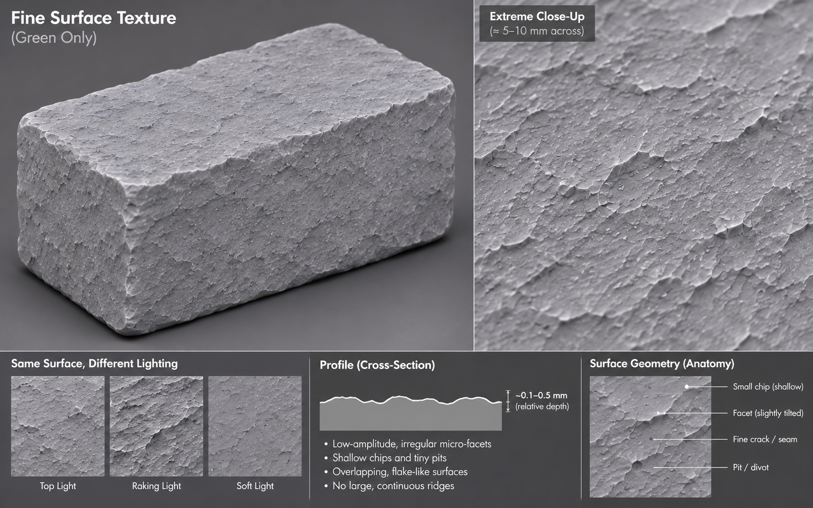

<title>Scale</title>
<meta name="claude:viewport-fit-sides" content="cover">
<link rel="stylesheet" href="https://fonts.googleapis.com/css2?family=Inter:wght@400;500;600&family=Space+Grotesk:wght@500;600&display=swap">
<style>
/* Layout: a bench for one stone texture. The reference sheet, then one large live view of the block with the texture cut into it,
   then how it is made, step by step in the form of Flakes Up Close: each step's words beside its picture.
   Neutrals are cool stone greys; one slate-blue accent for the controls. Red and orange are never used on the model (they mean
   overhang in dharmatiles). */
:root{
  --bg:#eef0f2;--panel:#f8f9fa;--fg:#1c2129;--muted:#5a6472;--rule:#d0d6dd;--stage:#8c8c91;--accent:#3557c9;--accent-soft:#c9d3f2;--err:#b3261e;
  --text:"Inter",system-ui,-apple-system,"Segoe UI",sans-serif;--head:"Space Grotesk","Inter",system-ui,sans-serif;--mono:ui-monospace,"SF Mono",Menlo,monospace;
  color-scheme:light}
@media (prefers-color-scheme:dark){:root:not([data-theme="light"]){--bg:#111418;--panel:#181c22;--fg:#e4e8ed;--muted:#98a2af;--rule:#2c333d;--accent:#93a8ff;--accent-soft:#2c3866;--err:#ff8a80;color-scheme:dark}}
:root[data-theme="dark"]{--bg:#111418;--panel:#181c22;--fg:#e4e8ed;--muted:#98a2af;--rule:#2c333d;--accent:#93a8ff;--accent-soft:#2c3866;--err:#ff8a80;color-scheme:dark}
*{box-sizing:border-box}
body{margin:0;background:var(--bg);color:var(--fg);font:15px/1.6 var(--text);padding-left:max(16px,env(safe-area-inset-left,0px));padding-right:max(16px,env(safe-area-inset-right,0px))}
main{max-width:1240px;margin:0 auto;padding-block:28px 64px;display:grid;gap:22px}
h1,h2{font-family:var(--head);font-weight:600;text-wrap:balance;margin:0}
h1{font-size:clamp(28px,4vw,40px);line-height:1.1;letter-spacing:-.01em}
h2{font-size:20px;line-height:1.25}
p{margin:0}
.lede{max-width:64ch;color:var(--muted);font-size:16px;margin-top:6px}
figure{margin:0;display:grid;gap:8px;min-width:0}
figcaption{font-size:13px;color:var(--muted);line-height:1.45}
.ref img{display:block;width:100%;height:auto;border:1px solid var(--rule);border-radius:3px}
.head{display:flex;flex-wrap:wrap;gap:10px 16px;align-items:center;justify-content:space-between}
.cams{display:flex;flex-wrap:wrap;gap:6px}
.cams button{font:500 13px var(--text);color:var(--fg);padding:5px 14px;border:1px solid var(--rule);border-radius:99px;background:var(--panel);cursor:pointer}
.cams button:hover{border-color:var(--accent)}
.cams button:focus-visible{outline:2px solid var(--accent);outline-offset:2px}
.cams button[aria-pressed="true"]{border-color:var(--accent);color:var(--accent);box-shadow:inset 0 0 0 1px var(--accent)}
/* the view: its size is the page's alone; the canvas fills it by CSS and never sets it */
.box{position:relative;width:100%;max-width:100%;aspect-ratio:16/10;border:1px solid var(--rule);background:var(--stage);overflow:hidden;border-radius:3px;contain:size}
.box>canvas{position:absolute;inset:0;width:100%;height:100%;max-width:none;display:block;touch-action:pan-y;cursor:grab}
.box>canvas:active{cursor:grabbing}
.box .wait{position:absolute;inset:0;display:grid;place-items:center;color:#1c2129;font:500 14px var(--text)}
.stat{font:13px var(--mono);font-variant-numeric:tabular-nums;color:var(--muted)}
.stat b{color:var(--fg);font-weight:600}
.fault{margin:0;padding:6px 10px;border:1px solid var(--err);border-radius:3px;color:var(--err);font-size:13px}
@media (max-width:640px){.box{aspect-ratio:1/1}}
.box.held{outline:2px solid var(--accent);outline-offset:2px}
/* the steps, in the form of Flakes Up Close: a numbered list to jump along, then each step's words beside its picture */
b{font-weight:600}
.steps{list-style:none;margin:6px 0 0;padding:0;display:flex;flex-wrap:wrap;gap:6px}
.steps a{display:flex;gap:6px;align-items:baseline;padding:4px 10px;border:1px solid var(--rule);border-radius:99px;color:var(--fg);text-decoration:none;font-size:13px;background:var(--panel)}
.steps a span{font:600 12px var(--head);color:var(--accent)}
.steps a:hover,.steps a:focus-visible{border-color:var(--accent);outline:none}
.step{display:grid;grid-template-columns:minmax(0,36ch) minmax(0,1fr);gap:20px 36px;padding:22px 0;border-top:1px solid var(--rule);scroll-margin-top:20px}
.step h2{font-size:22px}
.words{display:grid;gap:12px;align-content:start}
.words .n{font:600 13px var(--head);color:var(--accent);letter-spacing:.06em;text-transform:uppercase}
.facts{display:grid;grid-template-columns:auto auto;justify-content:start;gap:2px 14px;margin:4px 0 0;padding:10px 12px;background:var(--panel);border:1px solid var(--rule);border-radius:3px;font-size:13px}
.facts dt{color:var(--muted)}
.facts dd{margin:0;font-family:var(--mono);font-variant-numeric:tabular-nums}
.views{display:grid;grid-template-columns:minmax(0,1fr);gap:14px;align-content:start;min-width:0}
.views.two{grid-template-columns:minmax(0,1fr) minmax(0,1fr)}
.key{display:flex;flex-wrap:wrap;gap:6px 14px;font-size:12.5px;color:var(--muted)}
.key i{display:inline-block;width:10px;height:10px;border-radius:2px;margin-right:5px;vertical-align:-1px}
.sw-accent{background:var(--accent)}
/* the colours drawn over a lit picture, which is the same pale stone in both themes */
.sw-ink{background:#14181e;outline:1px solid var(--rule)}.sw-blue{background:#3557c9}
/* the flat diagrams, drawn on canvas from the build. Their size is the page's alone (contain:size): what a canvas holds never
   widens or lengthens the page */
.plot{contain:size;width:100%;max-width:100%;border:1px solid var(--rule);background:var(--panel);border-radius:3px;display:block}
@media (max-width:900px){.step{grid-template-columns:minmax(0,1fr)}}
@media (max-width:640px){.views.two{grid-template-columns:minmax(0,1fr)}}
html{scroll-behavior:smooth}
@media (prefers-reduced-motion:reduce){html{scroll-behavior:auto}}
</style>

<main>
  <header>
    <h1>Scale</h1>
    <p class="lede">A stone texture 0.1 to 0.5 mm deep: low tilted facets, shallow overlapping flakes with crisp stepped edges, raised specks and sand. The reference, then the texture cut into the standard block at true scale.</p>
  </header>

  <p class="fault" id="fault" role="alert" hidden></p>

  <figure class="ref">
    
    <figcaption>The reference.</figcaption>
  </figure>

  <section style="display:grid;gap:10px">
    <div class="head">
      <h2>The block</h2>
      <div class="cams" role="group" aria-label="Camera">
        <button type="button" id="cam-whole" aria-pressed="true">Whole block</button>
        <button type="button" id="cam-close" aria-pressed="false">Close-up, 8 mm across</button>
      </div>
    </div>
    <div class="box" id="view" role="img" aria-label="The block with the scale texture, live in 3D"><div class="wait" id="wait">Building the surface…</div></div>
    <p class="stat" id="stat">Drag to turn, pinch to zoom; click the view, then drag two fingers to pan.</p>
  </section>

  <ol class="steps" aria-label="The steps">
    <li><a href="#s1"><span>1</span>Height maps</a></li><li><a href="#s2"><span>2</span>Flakes</a></li><li><a href="#s3"><span>3</span>Ragged outline</a></li>
    <li><a href="#s4"><span>4</span>Stamping</a></li><li><a href="#s5"><span>5</span>Edges</a></li><li><a href="#s6"><span>6</span>Specks</a></li>
    <li><a href="#s7"><span>7</span>Sand</a></li><li><a href="#s8"><span>8</span>Close-up patch</a></li><li><a href="#s9"><span>9</span>Normals</a></li><li><a href="#s10"><span>10</span>Times</a></li>
  </ol>

  <section class="step" id="s1" aria-labelledby="h1s">
    <div class="words">
      <div class="n">Step 1</div><h2 id="h1s">Height maps</h2>
      <p>Each of the block's six faces is a <b>height map</b>: a grid of depths below the face, in the face's own flat frame, a number for every grid place. The texture is made in that frame and nowhere else. A point of the block is then its place on the plain face, moved in by its depth.</p>
      <p>Everything the texture has (a flake, a speck) is <b>stamped</b>: it writes only the grid places its own box covers. So the work is the number of points times a small constant, with no searching for what is near a point.</p>
      <dl class="facts"><dt>grid</dt><dd id="f-grid">–</dd><dt>points</dt><dd id="f-points">–</dd><dt>top face's map</dt><dd id="f-top">–</dd><dt>deepest</dt><dd id="f-deep">–</dd></dl>
    </div>
    <div class="views"><figure><canvas class="plot" id="p-map" height="300" role="img" aria-label="The top face's height map, drawn as a lit surface seen from straight above: overlapping flakes all over it, fading out along its four sides"></canvas>
      <figcaption>The top face's map, seen from straight above and lit from the top left, at true scale.</figcaption></figure></div>
  </section>

  <section class="step" id="s2" aria-labelledby="h2s">
    <div class="words">
      <div class="n">Step 2</div><h2 id="h2s">Flakes</h2>
      <p>The surface is left standing as overlapping <b>flakes</b>, like shingles. Each is a plate thin at one side and thick at the other, where it ends in a small cliff. Flakes are thrown at random over a face, in two sizes: a few large ones first, then many small ones cut into what the large ones left.</p>
      <p>Each face has a <b>way</b> its flakes' thick edges point: down the sides, and toward the near right of the top. A flake strays from it by a few tens of degrees, and is wider across that way than it is long.</p>
      <dl class="facts"><dt>large: radius</dt><dd id="f-r0">–</dd><dt>large: thickness</dt><dd id="f-d0">–</dd><dt>large: cover</dt><dd id="f-c0">–</dd><dt>small: radius</dt><dd id="f-r1">–</dd><dt>small: thickness</dt><dd id="f-d1">–</dd><dt>small: cover</dt><dd id="f-c1">–</dd><dt>wider than long</dt><dd id="f-wide">–</dd><dt>strays by</dt><dd id="f-spread">–</dd><dt>flakes on the block</dt><dd id="f-flakes">–</dd></dl>
    </div>
    <div class="views"><figure><canvas class="plot" id="p-place" height="300" role="img" aria-label="Part of the top face with each flake's plain outline drawn over the finished surface: a few large ovals and many small ones, each with a tick toward its thick edge"></canvas>
      <figcaption><span class="key"><span><i class="sw-ink"></i>large flakes</span><span><i class="sw-blue"></i>small flakes</span><span>Each outline is the flake before its edge is made ragged; the tick points to its thick edge.</span></span></figcaption></figure></div>
  </section>

  <section class="step" id="s3" aria-labelledby="h3s">
    <div class="words">
      <div class="n">Step 3</div><h2 id="h3s">Ragged outline</h2>
      <p>A flake's plain outline is an oval. Its real edge is that oval pushed in and out by a <b>noise of the place</b>: two smooth random fields laid over the whole map, a broad one and a fine one, added together.</p>
      <p>The noise is worked out once for every grid place, so reading it costs a flake nothing. It is held to six tenths of the most it could reach, which it seldom passes: that bounds how far any flake can reach, and so the box it is stamped in.</p>
      <dl class="facts"><dt>broad</dt><dd id="f-rag0">–</dd><dt>fine</dt><dd id="f-rag1">–</dd><dt>held to</dt><dd id="f-held">–</dd></dl>
    </div>
    <div class="views"><figure><canvas class="plot" id="p-rag" height="380" role="img" aria-label="One flake close up: its plain oval dashed, and its real ragged edge, wandering in and out of the oval"></canvas>
      <figcaption><span class="key"><span><i class="sw-ink"></i>the plain oval (dashed)</span><span><i class="sw-blue"></i>the edge the noise gives it</span><span>Other flakes overlap this one, so only part of its edge shows on the surface.</span></span></figcaption></figure></div>
  </section>

  <section class="step" id="s4" aria-labelledby="h4s">
    <div class="words">
      <div class="n">Step 4</div><h2 id="h4s">Stamping</h2>
      <p>A flake is stamped row by row over its box, each row only between the two places where it enters and leaves the flake's reach. At a place the flake's plate has a height: nothing at the feathered side, rising to the full thickness at the thick edge, most of it gained close to that edge, which turns it up into a <b>lip</b>. Outside the edge a <b>wall</b> drops it to nothing.</p>
      <p>Where flakes overlap the tallest shows, so their edges are scalloped arcs meeting in cusps. Then the face is cut from the size's cap down to what stands. The wall has a fixed width, as narrow as the grid carries without hatching.</p>
      <dl class="facts"><dt>lip</dt><dd id="f-lip">–</dd><dt>wall</dt><dd id="f-wall">–</dd><dt>top face's flakes</dt><dd id="f-visits">–</dd></dl>
    </div>
    <div class="views">
      <canvas class="plot" id="p-slice" height="90" role="img" aria-label="A section through the surface across the close-up patch, at true scale: the plain face as a line and the textured surface below it, in steps"></canvas>
      <canvas class="plot" id="p-zoom" height="150" role="img" aria-label="Two and a half millimetres of the same section, at true scale: tilted plates ending in small cliffs"></canvas>
      <div class="key"><span><i style="background:var(--muted)"></i>plain face</span><span><i class="sw-accent"></i>textured surface</span><span id="slice-label"></span></div>
    </div>
  </section>

  <section class="step" id="s5" aria-labelledby="h5s">
    <div class="words">
      <div class="n">Step 5</div><h2 id="h5s">Edges</h2>
      <p>A face's flakes stop at its sides, so near a side the texture <b>fades</b> to one level, half the flakes' caps. Two faces then reach their shared edge at the same depth.</p>
      <p>Along every edge runs a row of <b>chips</b>, each a depth that swells from nothing to its middle and back. Both faces at an edge read the same chips. A chip is a flat cut: the plane through the rounded edge's own line, pushed in by the chip's depth, bites both faces where it is deeper than they are.</p>
      <dl class="facts"><dt>fade</dt><dd id="f-meet">–</dd><dt>level</dt><dd id="f-level">–</dd><dt>chip length</dt><dd id="f-chipr">–</dd><dt>chip depth</dt><dd id="f-chipd">–</dd><dt>a chip every</dt><dd id="f-chipe">–</dd></dl>
    </div>
    <div class="views"><figure><canvas class="plot" id="p-chips" height="80" role="img" aria-label="Ten millimetres of the top face's near edge at true scale: the plain edge as a line and the chips as shallow scallops below it"></canvas>
      <figcaption>Ten millimetres of the top face's near edge, at true scale: how far each chip's flat cut is pushed in.</figcaption></figure></div>
  </section>

  <section class="step" id="s6" aria-labelledby="h6s">
    <div class="words">
      <div class="n">Step 6</div><h2 id="h6s">Specks</h2>
      <p><b>Specks</b> are small round grains sprinkled over everything, plateau or cliff alike. Each is stamped like a flake, on the few places its box covers, and stands on whatever it lands on. They are the one place the texture adds material.</p>
      <dl class="facts"><dt>specks</dt><dd id="f-specks">–</dd><dt>across</dt><dd id="f-speckr">–</dd><dt>high</dt><dd id="f-speckh">–</dd><dt>on the block</dt><dd id="f-speckn">–</dd></dl>
    </div>
    <div class="views"><figure><canvas class="plot" id="p-specks" height="300" role="img" aria-label="Three millimetres of the surface from above, lit from the top left: small raised grains on the plates"></canvas>
      <figcaption>Three millimetres of the close-up patch, from straight above, lit from the top left.</figcaption></figure></div>
  </section>

  <section class="step" id="s7" aria-labelledby="h7s">
    <div class="words">
      <div class="n">Step 7</div><h2 id="h7s">Sand</h2>
      <p>Last, every grid place is moved by its own small random amount, in or out. It is one multiplication a point, with no shape of its own: the grid's own fineness is the grain of the sand.</p>
      <dl class="facts"><dt>sand</dt><dd id="f-grain">–</dd></dl>
    </div>
    <div class="views"><figure><canvas class="plot" id="p-sand" height="300" role="img" aria-label="Under a millimetre of the surface from above, each grid place a small square, each a little lighter or darker than its neighbours"></canvas>
      <figcaption id="cap-sand">A close view from straight above, each grid place drawn as one square.</figcaption></figure></div>
  </section>

  <section class="step" id="s8" aria-labelledby="h8s">
    <div class="words">
      <div class="n">Step 8</div><h2 id="h8s">Close-up patch</h2>
      <p>The block's grid is too coarse to show the texture from eight millimetres away, so a window of the top face is drawn on a finer map. It is not another texture: the top face's same flakes, specks and noise are stamped again, onto more places. The window's border points are the block grid's own.</p>
      <dl class="facts"><dt>window</dt><dd id="f-win">–</dd><dt>its grid</dt><dd id="f-fine">–</dd><dt>its points</dt><dd id="f-finen">–</dd></dl>
    </div>
    <div class="views"><figure><canvas class="plot" id="p-patch" height="300" role="img" aria-label="The top face from above with the close-up patch's window outlined on it"></canvas>
      <figcaption><span class="key"><span><i class="sw-accent"></i>the window of the close-up patch, on the top face</span></span></figcaption></figure></div>
  </section>

  <section class="step" id="s9" aria-labelledby="h9s">
    <div class="words">
      <div class="n">Step 9</div><h2 id="h9s">Normals</h2>
      <p>The way each point faces, for the light, comes straight from the grid: the step from the place before it to the place after it, along and across, and the direction square to both. Points on a shared edge take the sum from each face they belong to.</p>
      <p>The diagram is a real row of places from the close-up patch, at true scale: nine neighbours, the step across the middle one, and its normal.</p>
    </div>
    <div class="views"><figure><canvas class="plot" id="p-normal" height="200" role="img" aria-label="Nine neighbouring grid places in section at true scale, a line from the fourth to the sixth, and an arrow square to it from the fifth"></canvas>
      <figcaption id="cap-normal">Nine places of one row, in section.</figcaption></figure></div>
  </section>

  <section class="step" id="s10" aria-labelledby="h10s">
    <div class="words">
      <div class="n">Step 10</div><h2 id="h10s">Times</h2>
      <p>Each stage of this build, timed as the page made it. The texture itself is the noise, the flakes, the specks, the sand and the edges; the grid, the triangles and the normals are what any surface needs to be drawn.</p>
    </div>
    <div class="views two">
      <figure><dl class="facts" id="times-block"></dl><figcaption>The whole block.</figcaption></figure>
      <figure><dl class="facts" id="times-patch"></dl><figcaption>The close-up patch.</figcaption></figure>
    </div>
  </section>
</main>

<script src="https://cdnjs.cloudflare.com/ajax/libs/three.js/r128/three.min.js"></script>
<script src="https://cdn.jsdelivr.net/npm/three@0.128.0/examples/js/controls/OrbitControls.js"></script>
<script>
(function () {
  'use strict';
  /* Anything that goes wrong is said on the page, not only in the console */
  function report(where, e) {
    const p = document.getElementById('fault'); p.hidden = false;
    p.textContent = 'Something went wrong ' + where + ': ' + (e && e.message ? e.message : e) + '. Please send this line.';
    console.error(e);
  }
  window.addEventListener('error', (e) => report('on the page', e.error || e.message));
  window.addEventListener('unhandledrejection', (e) => report('on the page', e.reason));
  if (typeof THREE === 'undefined') { report('loading', 'the 3D library (three.js) did not load'); return; }
  const T = THREE;

  /* The reference camera, fitted to the reference picture with the reference block */
  const CAM = { az: -33.75, el: 22.87, dist: 304.8, fov: 8, target: [-4.3, -6.66, 10.53] };

  /* ---- this page's settings: the block's grid and its edges; the texture's own are in Scale, below ---- */
  const BENCH = {
    seed: 11,
    grid: .08,               /* the block's grid */
    patch: { a: [.39, .73], b: [.2, .8], sub: 4 },   /* the part of the top face (along, across) drawn on a grid `sub` times finer, for the close-up */
    grainWay: [.5, -.6, -.6],   /* a flake's thick edge points this way, laid onto each face: like shingles, down the sides and towards the near right of the top */
    /* arrises: along every edge a row of chips, one every `every` mm, each r long and up to D deep at its middle: a flat cut across
       the rounded edge */
    arris: { r: [.4, 1.2], D: .22, every: .3 }
  };

  /* ---- the shape: the standard block, as on Flakes Up Close ----
     Six four-sided faces (top, near, far, left end, right end, bottom), each covered by a grid; faces that share an edge share its
     count of steps. inner gives, for a point of the box, a point q inside and the way out n: the rounded surface is q + n * r. */
  const lerp = (c, a, b, t) => (c[0][t] * (1 - a) + c[1][t] * a) * (1 - b) + (c[3][t] * (1 - a) + c[2][t] * a) * b;
  const sub = (p, q) => [p[0] - q[0], p[1] - q[1], p[2] - q[2]];
  const len = (v) => Math.hypot(v[0], v[1], v[2]);
  const clamp = (v, lo, hi) => v < lo ? lo : v > hi ? hi : v;
  const end = (x, e) => [[x, -e.W / 2, 0], [x, e.W / 2, 0], [x, e.W / 2, e.H], [x, -e.W / 2, e.H]];
  function hexa(A, B) {
    const faces = [[A[3], B[3], B[2], A[2]], [A[0], B[0], B[3], A[3]], [B[1], A[1], A[2], B[2]], [A[1], A[0], A[3], A[2]], [B[0], B[1], B[2], B[3]], [A[1], B[1], B[0], A[0]]];
    const most = (pairs) => Math.max(...pairs.map(([p, q]) => len(sub(p, q))));
    const L = most([0, 1, 2, 3].map(i => [A[i], B[i]])), W = most([[A[0], A[1]], [A[3], A[2]], [B[0], B[1]], [B[3], B[2]]]), H = most([[A[0], A[3]], [A[1], A[2]], [B[0], B[3]], [B[1], B[2]]]);
    return { faces: faces, counts: (step) => { const nL = Math.round(L / step), nW = Math.round(W / step), nH = Math.round(H / step); return [[nL, nW], [nL, nH], [nL, nH], [nW, nH], [nW, nH], [nL, nW]]; } };
  }
  function taper(B, r) {
    const s = hexa(end(-B.L / 2, B.left), end(B.L / 2, B.right)); s.r = r;
    s.inner = (x, y, z, q, n) => { const a = (x + B.L / 2) / B.L, hw = (B.left.W + (B.right.W - B.left.W) * a) / 2, H = B.left.H + (B.right.H - B.left.H) * a;
      q[0] = clamp(x, -B.L / 2 + r, B.L / 2 - r); q[1] = clamp(y, -hw + r, hw - r); q[2] = clamp(z, r, H - r);
      const dx = x - q[0], dy = y - q[1], dz = z - q[2], l = Math.sqrt(dx * dx + dy * dy + dz * dz) || 1; n[0] = dx / l; n[1] = dy / l; n[2] = dz / l; };
    return s;
  }
  const BLOCK = taper({ L: 32.6, left: { W: 14.8, H: 12.25 }, right: { W: 16.9, H: 15.3 } }, .5);
  const stream = (k) => { let a = k >>> 0; return () => { a = (a + 0x6D2B79F5) >>> 0; let t = a; t = Math.imul(t ^ (t >>> 15), t | 1); t ^= t + Math.imul(t ^ (t >>> 7), t | 61); return ((t ^ (t >>> 14)) >>> 0) / 4294967296; }; };

  /* ==== Scale, the texture. One block of code, the same byte for byte in design/scale/out.html (its source) and in
     design/rock-close/out.html (Flakes Up Close, which lays it on the flats inside its flakes). Change it in the source, then
     paste it over the other. ====
     A face is a height map: a grid of depths below the face, in the face's own flat frame (x along, y across, mm). Each feature
     (a flake, a speck) is stamped onto the grid places its own box covers and nowhere else, so the cost is the number of points
     times a small constant, with no search. A map is { ni, nj, h (its step), x0, y0, seed, cut, stage, rag }. */
  const Scale = (() => {
    /* the settings, all in mm at true size */
    const settings = {
      /* flakes, the larger size first: r the radius, D the thickness at the thick edge, cover how many times they cover the surface,
         wide how much wider than long a flake is, spread how far (degrees) its direction strays */
      flakes: [
        { r: [1.6, 3.0], D: [.04, .11], cover: 1.6, wide: [1.0, 1.5], spread: 45 },
        { r: [.35, .95], D: [.05, .13], cover: 2.2, wide: [1.3, 2.2], spread: 30 }
      ],
      ragged: [{ by: .3, wave: 1.1 }, { by: .16, wave: .33 }],   /* a flake's boundary is a circle pushed in and out by two noises of the place, each by up to `by` mm at its wave for a flake of 0.8 mm (a smaller or larger one takes its share, up to twice) */
      lip: .55,                /* this share of a flake's thickness is gained close to its thick edge, which turns the edge up into a lip */
      wall: .05,               /* a flake's edge is a wall this wide (mm), however tall: the narrowest a grid carries without hatching is about 2.5 of its steps (0.02 mm steps here), so a coarser grid widens it to walls * its step */
      walls: 1.5,
      meet: .6,                /* within this many mm of a map's sides its texture fades out to one level, so two faces meet at their shared edge */
      specks: { per: 2.2, r: [.05, .125], high: [.02, .06] },   /* raised grains per mm², their radius and height: the one place the texture adds material */
      grain: .008              /* sand: every point is cut or raised by up to this much, at random */
    };
    /* value noise in 2D over a whole grid at once: amp * (-1..1) added to every place of arr. A row's lattice values are blended
       once for the row, so a point costs one blend more. */
    function lattice(ix, iy, k) { let h = Math.imul(ix, 0x27d4eb2d) ^ Math.imul(iy, 0x165667b1) ^ k; h = Math.imul(h ^ (h >>> 15), 0x2c1b3c6d); return ((h ^ (h >>> 13)) >>> 0) / 2147483648 - 1; }
    function noise(arr, ni, nj, h, x0, y0, wave, amp, seed) {
      const s = h / wave, xa = x0 / wave, first = Math.floor(xa), col = new Float32Array(Math.floor(xa + (ni - 1) * s) - first + 2);
      for (let j = 0, k = 0; j < nj; j++) { const y = (y0 + j * h) / wave, iy = Math.floor(y); let fy = y - iy; fy = fy * fy * (3 - 2 * fy);
        for (let c = 0; c < col.length; c++) { const a = lattice(first + c, iy, seed); col[c] = amp * (a + (lattice(first + c, iy + 1, seed) - a) * fy); }
        for (let i = 0; i < ni; i++, k++) { const x = xa + i * s, ix = Math.floor(x), c = ix - first; let fx = x - ix; fx = fx * fx * (3 - 2 * fx); arr[k] += col[c] + (col[c + 1] - col[c]) * fx; } }
    }
    /* a map of ni by nj places, in `room` (arrays at least that long, used again) or its own. The ragged noise is held to HELD of
       its octaves' sum, which it seldom passes: that bounds how far a flake reaches. */
    const HELD = .6;
    function map(ni, nj, h, x0, y0, seed, F, room) {
      const n = ni * nj, M = room || { cut: new Float32Array(n), stage: new Float32Array(n), rag: new Float32Array(n) }, rag = M.rag, most = HELD * F.ragged.reduce((s, o) => s + o.by, 0);
      if (room) { M.cut.fill(0, 0, n); M.stage.fill(0, 0, n); rag.fill(0, 0, n); }
      F.ragged.forEach((o, e) => noise(rag, ni, nj, h, x0, y0, o.wave, o.by, seed + 977 * e));
      for (let k = 0; k < n; k++) { const v = rag[k]; if (v > most) rag[k] = most; else if (v < -most) rag[k] = -most; }
      return { ni: ni, nj: nj, h: h, x0: x0, y0: y0, seed: seed, cut: M.cut, stage: M.stage, rag: rag, ragMost: most, wide: Math.max(F.wall, F.walls * h) };
    }
    /* a face's features, for a face Lx by Ly mm whose flakes' thick edges point `way` (an angle in its frame): the flakes of each
       size (fl holds FL numbers a flake: x, y, the way its thick edge points (cos, sin), r, D, 1 / wide, and its share of the
       raggedness; cap is the size's thickest) and the specks (sp holds x, y, r, height each). rnd is the caller's stream. */
    const FL = 8, DEG = Math.PI / 180;
    function features(F, Lx, Ly, way, rnd) {
      const range = (r) => r[0] + (r[1] - r[0]) * rnd();
      const flakes = F.flakes.map((sc) => { const rm = (sc.r[0] + sc.r[1]) / 2, wm = (sc.wide[0] + sc.wide[1]) / 2, pad = sc.r[1] * wm;
        const count = Math.round(sc.cover * (Lx + 2 * pad) * (Ly + 2 * pad) / (Math.PI * rm * rm * wm)), fl = new Float32Array(count * FL);
        for (let k = 0, o = 0; k < count; k++, o += FL) { const r = range(sc.r), turn = way + (rnd() + rnd() + rnd() - 1.5) * 1.3 * sc.spread * DEG;
          fl[o] = -pad + rnd() * (Lx + 2 * pad); fl[o + 1] = -pad + rnd() * (Ly + 2 * pad); fl[o + 2] = Math.cos(turn); fl[o + 3] = Math.sin(turn); fl[o + 4] = r;
          fl[o + 5] = (sc.D[0] + (sc.D[1] - sc.D[0]) * rnd()) * (.55 + .45 * r / sc.r[1]); fl[o + 6] = 1 / range(sc.wide); fl[o + 7] = Math.min(2, r / .8); }
        return { fl: fl, count: count, cap: sc.D[1] }; });
      const count = Math.round(F.specks.per * Lx * Ly), sp = new Float32Array(count * 4);
      for (let k = 0, o = 0; k < count; k++, o += 4) { const r = range(F.specks.r); sp[o] = rnd() * Lx; sp[o + 1] = rnd() * Ly; sp[o + 2] = r; sp[o + 3] = range(F.specks.high) * (r / F.specks.r[1]); }
      return { flakes: flakes, specks: sp, speckCount: count };
    }
    /* One size of flakes onto one map. A flake is a gently tilted plate inside a ragged round boundary (wider than long), thin at
       its feathered side and D thick at its other, where it ends in a wall (of the map's width) down to whatever lies beside it.
       Where flakes overlap the tallest shows, so their edges are scalloped arcs that meet in cusps; the surface is cut from the
       size's cap down to them. Each row of a flake's box visits only the places inside the flake's reach. */
    function stamp(M, fl, count, cap, F) {
      const ragMost = M.ragMost, ni = M.ni, nj = M.nj, h = M.h, stage = M.stage, rag = M.rag, W = M.wide, lip = F.lip;
      for (let f = 0, o = 0; f < count; f++, o += FL) {
        const cx = fl[o] - M.x0, cy = fl[o + 1] - M.y0, ax = fl[o + 2], ay = fl[o + 3], r = fl[o + 4], D = fl[o + 5], iw = fl[o + 6], sc = fl[o + 7], ir = 1 / r;
        const slope = D / W, far = r + sc * ragMost + W, far2 = far * far, fy = far * Math.sqrt(ay * ay + ax * ax / (iw * iw));
        const j0 = Math.max(0, Math.ceil((cy - fy) / h)), j1 = Math.min(nj - 1, Math.floor((cy + fy) / h)), du = h * ax, dw = -h * ay * iw, A = du * du + dw * dw;
        for (let j = j0; j <= j1; j++) {
          const dy = j * h - cy, u0 = dy * ay - cx * ax, w0 = (dy * ax + cx * ay) * iw, B = u0 * du + w0 * dw, disc = B * B - A * (u0 * u0 + w0 * w0 - far2); if (disc < 0) continue;
          const sq = Math.sqrt(disc), i0 = Math.max(0, Math.ceil((-B - sq) / A)), i1 = Math.min(ni - 1, Math.floor((-B + sq) / A));
          let u = u0 + i0 * du, w = w0 + i0 * dw;
          for (let i = i0, k = j * ni + i0; i <= i1; i++, k++, u += du, w += dw) {
            let a = (u * ir + 1) * .5; a = a < 0 ? 0 : a > 1 ? 1 : a; a = a * a * (3 - 2 * a); a *= 1 - lip + lip * a * a * a;
            let d = D * a; const now = stage[k]; if (d <= now) continue;   /* it cannot show here: the plate itself is under what stands */
            const t = Math.sqrt(u * u + w * w) - r - sc * rag[k];
            if (t > 0) { d -= slope * t; if (d <= now) continue; }
            stage[k] = d;
          }
        }
      }
      const cut = M.cut; for (let k = 0, n = ni * nj; k < n; k++) { const s = stage[k]; if (s < cap) cut[k] += cap - s; stage[k] = 0; }
    }
    /* raised specks onto one map */
    function sprinkle(M, sp, count) {
      const ni = M.ni, nj = M.nj, h = M.h, cut = M.cut;
      for (let s = 0, o = 0; s < count; s++, o += 4) { const cx = sp[o] - M.x0, cy = sp[o + 1] - M.y0, r = sp[o + 2], high = sp[o + 3], ir = 1 / (r * r);
        const i0 = Math.max(0, Math.ceil((cx - r) / h)), i1 = Math.min(ni - 1, Math.floor((cx + r) / h)), j0 = Math.max(0, Math.ceil((cy - r) / h)), j1 = Math.min(nj - 1, Math.floor((cy + r) / h));
        for (let j = j0; j <= j1; j++) for (let i = i0; i <= i1; i++) { const dx = i * h - cx, dy = j * h - cy, m = 1 - (dx * dx + dy * dy) * ir; if (m > 0) cut[j * ni + i] -= high * m * m; } }
    }
    /* sand onto one map: each place by its own random share of F.grain */
    function sand(M, F) {
      const cut = M.cut, seed = M.seed, grain = F.grain / 2147483648;
      for (let k = 0, n = M.ni * M.nj; k < n; k++) { let h = Math.imul(k + 1, 0x9e3779b1) ^ seed; h = Math.imul(h ^ (h >>> 15), 0x2c1b3c6d); cut[k] += grain * ((h ^ (h >>> 13)) >>> 0) - F.grain; }
    }
    /* the whole texture onto a map: after it M.cut is each place's depth. lap, if given, is told each part's name as it ends. */
    function fill(M, feat, F, lap) {
      for (const s of feat.flakes) stamp(M, s.fl, s.count, s.cap, F); if (lap) lap('flakes');
      sprinkle(M, feat.specks, feat.speckCount); if (lap) lap('specks');
      sand(M, F); if (lap) lap('sand');
    }
    /* the one level the texture fades out to at a map's sides: half the flakes' caps */
    const level = (F) => F.flakes.reduce((s, sc) => s + sc.D[1], 0) / 2;
    /* a map's sides fade to the level, over F.meet mm */
    function meet(M, F) {
      const ni = M.ni, nj = M.nj, cut = M.cut, n = Math.min(Math.ceil(F.meet / M.h), ni >> 1, nj >> 1), lv = level(F);
      const ease = (k, e) => { const w = e / n; cut[k] = lv + (cut[k] - lv) * w * w * (3 - 2 * w); };
      for (let j = 0; j < nj; j++) { const dj = Math.min(j, nj - 1 - j);
        if (dj < n) for (let i = 0; i < ni; i++) ease(j * ni + i, Math.min(dj, i, ni - 1 - i));
        else for (let e = 0; e < n; e++) { ease(j * ni + e, e); ease(j * ni + ni - 1 - e, e); } }
    }
    return { settings: settings, map: map, features: features, fill: fill, meet: meet, level: level };
  })();
  /* ==== the end of Scale ==== */

  /* ---- the block's build ----
     Each face's map in turn, then its points; the edges get chips; the close-up patch is the top face's features on a finer map. */
  const clock = (into) => { let t = performance.now(); return (name) => { const n = performance.now(); into[name] = (into[name] || 0) + n - t; t = n; }; };
  const unit = (nor, N) => { for (let i = 0; i < 3 * N; i += 3) { const x = nor[i], y = nor[i + 1], z = nor[i + 2], l = 1 / (Math.sqrt(x * x + y * y + z * z) || 1); nor[i] = x * l; nor[i + 1] = y * l; nor[i + 2] = z * l; } };
  /* a map's normals from its points (ids says which point each grid place is), added into nor: at each place, the cross of the
     step along and the step across, each from the place before to the place after */
  function normals(ni, nj, ids, pos, nor) {
    for (let j = 0, k = 0; j < nj; j++) { const ju = j > 0 ? -ni : 0, jd = j < nj - 1 ? ni : 0;
      for (let i = 0; i < ni; i++, k++) { const a = 3 * (ids ? ids[k + (i < ni - 1 ? 1 : 0)] : k + (i < ni - 1 ? 1 : 0)), b = 3 * (ids ? ids[k - (i > 0 ? 1 : 0)] : k - (i > 0 ? 1 : 0)), c = 3 * (ids ? ids[k + jd] : k + jd), d = 3 * (ids ? ids[k + ju] : k + ju), id = 3 * (ids ? ids[k] : k);
        const ux = pos[a] - pos[b], uy = pos[a + 1] - pos[b + 1], uz = pos[a + 2] - pos[b + 2], vx = pos[c] - pos[d], vy = pos[c + 1] - pos[d + 1], vz = pos[c + 2] - pos[d + 2];
        const x = uy * vz - uz * vy, y = uz * vx - ux * vz, z = ux * vy - uy * vx, l = 1 / (Math.sqrt(x * x + y * y + z * z) || 1);
        nor[id] += x * l; nor[id + 1] += y * l; nor[id + 2] += z * l; } }
  }
  function build(B, F) {
    const S = BLOCK, R = S.r, step = B.grid, counts = S.counts(step), rnd = stream(B.seed), range = (r) => r[0] + (r[1] - r[0]) * rnd(), times = {}, lap = clock(times);
    /* 1. the grid: which point each place of the six faces' grids is, the faces welded along their shared edges into one closed
       surface, and the triangles. A window of the top face is left open for the fine patch, whose border points are the block
       grid's own. */
    const P = B.patch, na0 = counts[0][0], nb0 = counts[0][1];
    const wi0 = Math.round(P.a[0] * na0), wi1 = Math.round(P.a[1] * na0), wj0 = Math.round(P.b[0] * nb0), wj1 = Math.round(P.b[1] * nb0);
    let nq = 0, most = 0; for (const [na, nb] of counts) { nq += na * nb; most = Math.max(most, (na + 1) * (nb + 1)); }
    const index = new Uint32Array((nq - (wi1 - wi0) * (wj1 - wj0)) * 6), weld = new Map(), q = [0, 0, 0], n = [0, 0, 0], q2 = [0, 0, 0], m = [0, 0, 0]; let N = 0, ti = 0;
    const faces = S.faces.map((c, f) => {
      const na = counts[f][0], nb = counts[f][1], ni = na + 1, ids = new Uint32Array(ni * (nb + 1));
      /* a place's point on the box */
      const at = (i, j, p) => { const a = i / na, b = j / nb; p[0] = lerp(c, a, b, 0); p[1] = lerp(c, a, b, 1); p[2] = lerp(c, a, b, 2); };
      for (let j = 0, k = 0; j <= nb; j++) for (let i = 0; i <= na; i++, k++) {
        if (i > 0 && j > 0 && i < na && j < nb) { ids[k] = N++; continue; }
        at(i, j, q); const key = (Math.round((q[0] + 20.0037) * 50) * 8192 + Math.round((q[1] + 20.0037) * 50)) * 8192 + Math.round((q[2] + 20.0037) * 50), got = weld.get(key);
        if (got !== undefined) ids[k] = got; else { weld.set(key, N); ids[k] = N++; } }
      for (let j = 0; j < nb; j++) for (let i = 0; i < na; i++) { if (f === 0 && i >= wi0 && i < wi1 && j >= wj0 && j < wj1) continue;
        const p0 = ids[j * ni + i], p1 = ids[j * ni + i + 1], p2 = ids[(j + 1) * ni + i + 1], p3 = ids[(j + 1) * ni + i];
        index[ti++] = p0; index[ti++] = p1; index[ti++] = p2; index[ti++] = p0; index[ti++] = p2; index[ti++] = p3; }
      /* the way the face's flakes point, in its own flat frame */
      const eu = sub(c[1], c[0]), ev = sub(c[3], c[0]), G = B.grainWay, gu = (G[0] * eu[0] + G[1] * eu[1] + G[2] * eu[2]) / len(eu), gv = (G[0] * ev[0] + G[1] * ev[1] + G[2] * ev[2]) / len(ev);
      return { c: c, na: na, nb: nb, ids: ids, at: at, way: Math.hypot(gu, gv) < .25 ? .3 : Math.atan2(gv, gu) };
    });
    lap('grid and triangles');

    /* 2. the features: each face's flakes and specks; and the chips along each edge, as a depth for every point of the rim */
    for (const fc of faces) fc.feat = Scale.features(F, fc.na * step, fc.nb * step, fc.way, rnd);
    const chip = new Float32Array(N), chipped = new Uint8Array(N), A = B.arris;
    for (const fc of faces) { const ni = fc.na + 1, ids = fc.ids;
      for (const [from, by, len] of [[0, 1, fc.na], [fc.nb * ni, 1, fc.na], [0, ni, fc.nb], [fc.na, ni, fc.nb]]) {
        if (chipped[ids[from + by * (len >> 1)]]) continue;   /* the face across this edge made its chips already */
        for (let s = rnd() * A.every; s < len * step; s += A.every * (.5 + rnd())) { const r = range(A.r), D = A.D * rnd() * rnd(), a = Math.max(0, Math.ceil((s - r) / step)), b = Math.min(len, Math.floor((s + r) / step));
          for (let e = a; e <= b; e++) { const t = (e * step - s) / r, d = D * (1 - t * t), id = ids[from + by * e]; if (d > chip[id]) chip[id] = d; } }
        for (let e = 0; e <= len; e++) chipped[ids[from + by * e]] = 1; } }
    lap('placing');

    /* 3. each face's map in turn (one map's room serves them all): the texture, the fade at its sides, the chips' flat cuts
       across the rounding, and the points. Away from its sides a face is flat: its points are the box's own and the way out is
       one. */
    const pos = new Float32Array(N * 3), room = { cut: new Float32Array(most), stage: new Float32Array(most), rag: new Float32Array(most) };
    const band = Math.ceil((R + .3) / step), edge = Math.max(Math.ceil(R / step) + 1, band); let deepest = 0, flakes = 0, specks = 0, topMap = null;
    faces.forEach((fc, f) => { const c = fc.c, na = fc.na, nb = fc.nb, ni = na + 1, nj = nb + 1, ids = fc.ids, M = Scale.map(ni, nj, step, 0, 0, B.seed * 31 + f, F, room), stage = M.stage, cut = M.cut; fc.seed = M.seed;
      lap('ragged noise');
      Scale.fill(M, fc.feat, F, lap); flakes += fc.feat.flakes.reduce((s, x) => s + x.count, 0); specks += fc.feat.speckCount;
      Scale.meet(M, F);
      /* the chips: for a point near a side, the flat cut through the rim's point pushed in by its chip, square to the rim's way out */
      const bite = (ri, rj, di, dj) => { const chipD = chip[ids[rj * ni + ri]]; if (chipD <= 0) return;
        fc.at(ri, rj, q2); S.inner(q2[0], q2[1], q2[2], q2, m);
        for (let e = 0; e < band; e++) { const i = ri + di * e, j = rj + dj * e, k = j * ni + i; fc.at(i, j, q); S.inner(q[0], q[1], q[2], q, n);
          const nm = n[0] * m[0] + n[1] * m[1] + n[2] * m[2]; if (nm < .3) break;
          const d = ((q[0] - q2[0]) * m[0] + (q[1] - q2[1]) * m[1] + (q[2] - q2[2]) * m[2] + R * (nm - 1) + chipD) / nm; if (d <= 0) break; if (d > stage[k]) stage[k] = d; } };
      for (let j = 0; j < nj; j++) { bite(0, j, 1, 0); bite(na, j, -1, 0); }
      for (let i = 0; i < ni; i++) { bite(i, 0, 0, 1); bite(i, nb, 0, -1); }
      lap('edges');
      fc.at(na >> 1, nb >> 1, q); S.inner(q[0], q[1], q[2], q, n); const fx = n[0], fy = n[1], fz = n[2];
      for (let j = 0, k = 0; j < nj; j++) { const b = j / nb, dj = Math.min(j, nb - j), lx = c[0][0] + (c[3][0] - c[0][0]) * b, ly = c[0][1] + (c[3][1] - c[0][1]) * b, lz = c[0][2] + (c[3][2] - c[0][2]) * b;
        const sx = (c[1][0] + (c[2][0] - c[1][0]) * b - lx) / na, sy = (c[1][1] + (c[2][1] - c[1][1]) * b - ly) / na, sz = (c[1][2] + (c[2][2] - c[1][2]) * b - lz) / na;
        for (let i = 0; i < ni; i++, k++) { const id = 3 * ids[k], x = lx + sx * i, y = ly + sy * i, z = lz + sz * i;
          if (Math.min(dj, i, na - i) >= edge) { const d = cut[k]; pos[id] = x - fx * d; pos[id + 1] = y - fy * d; pos[id + 2] = z - fz * d; if (d > deepest) deepest = d; }
          else { const d = cut[k] += stage[k]; S.inner(x, y, z, q, n); pos[id] = q[0] + n[0] * (R - d); pos[id + 1] = q[1] + n[1] * (R - d); pos[id + 2] = q[2] + n[2] * (R - d); if (d > deepest) deepest = d; } } }
      if (f === 0) topMap = { ni: ni, nj: nj, h: step, cut: cut.slice(0, ni * nj), chips: Float32Array.from({ length: ni }, (v, i) => chip[ids[i]]) };   /* kept for the page's diagrams */
      lap('points'); });
    const nor = new Float32Array(N * 3); for (const fc of faces) normals(fc.na + 1, fc.nb + 1, fc.ids, pos, nor);
    unit(nor, N); lap('normals');

    /* the close-up patch: the top face's own features on a map P.sub times finer, over the window */
    const ptimes = {}, plap = clock(ptimes), top = faces[0], h = step / P.sub, pi = (wi1 - wi0) * P.sub + 1, pj = (wj1 - wj0) * P.sub + 1, PN = pi * pj, ppos = new Float32Array(PN * 3), pnor = new Float32Array(PN * 3), pindex = new Uint32Array((pi - 1) * (pj - 1) * 6);
    { let ix = 0; for (let j = 0; j < pj - 1; j++) for (let i = 0; i < pi - 1; i++) { const p0 = j * pi + i, p1 = p0 + 1, p3 = p0 + pi, p2 = p3 + 1; pindex[ix++] = p0; pindex[ix++] = p1; pindex[ix++] = p2; pindex[ix++] = p0; pindex[ix++] = p2; pindex[ix++] = p3; } }
    plap('grid and triangles');
    const M = Scale.map(pi, pj, h, wi0 * step, wj0 * step, top.seed, F, null); plap('ragged noise');
    Scale.fill(M, top.feat, F, plap);
    { const c = top.c, cut = M.cut; top.at(na0 >> 1, nb0 >> 1, q); S.inner(q[0], q[1], q[2], q, n); const fx = n[0], fy = n[1], fz = n[2];
      for (let j = 0, k = 0; j < pj; j++) { const b = (wj0 + j / P.sub) / nb0, a0 = wi0 / na0, a1 = wi1 / na0, x0 = lerp(c, a0, b, 0), y0 = lerp(c, a0, b, 1), z0 = lerp(c, a0, b, 2), sx = (lerp(c, a1, b, 0) - x0) / (pi - 1), sy = (lerp(c, a1, b, 1) - y0) / (pi - 1), sz = (lerp(c, a1, b, 2) - z0) / (pi - 1);
        for (let i = 0; i < pi; i++, k++) { const d = cut[k]; ppos[3 * k] = x0 + sx * i - fx * d; ppos[3 * k + 1] = y0 + sy * i - fy * d; ppos[3 * k + 2] = z0 + sz * i - fz * d; } } }
    plap('points');
    normals(pi, pj, null, ppos, pnor); unit(pnor, PN); plap('normals');
    const sum = (t) => Object.values(t).reduce((s, x) => s + x, 0);
    return { pos: pos, nor: nor, index: index, points: N, ms: sum(times), times: times, flakes: flakes, specks: specks, deepest: deepest, top: topMap, feat: top.feat, way: top.way,
      fine: { pos: ppos, nor: pnor, index: pindex, points: PN, step: h, ms: sum(ptimes), times: ptimes, map: M } };
  }

  /* ---- the view ---- */
  const box = document.getElementById('view'), fmt = (v, d) => v.toLocaleString('en-US', { minimumFractionDigits: d || 0, maximumFractionDigits: d || 0 });
  const renderer = new T.WebGLRenderer({ antialias: true, alpha: true }); renderer.setPixelRatio(Math.min(window.devicePixelRatio || 1, 2));
  const canvas = renderer.domElement;
  /* Scrolling over the view scrolls the page until you click the view. A click takes it (outlined); then a two-finger drag on a
     trackpad pans it, until the pointer leaves or Escape. A pinch always zooms: a trackpad's comes as a wheel with ctrl held, which
     the controls read. On a touch screen two fingers pan and pinch together (the controls' own); a mouse pans with the right button.
     This listener is the canvas's first, so a plain scroll never reaches the controls. */
  let held = false;
  const hold = (on) => { held = on; box.classList.toggle('held', on); };
  canvas.addEventListener('pointerdown', () => hold(true));
  canvas.addEventListener('pointerleave', (e) => { if (e.pointerType === 'mouse') hold(false); });
  window.addEventListener('keydown', (e) => { if (e.key === 'Escape') hold(false); });
  canvas.addEventListener('wheel', (e) => {
    if (e.ctrlKey) return;
    e.stopImmediatePropagation(); if (!held) return;
    e.preventDefault();
    /* move the camera and what it looks at together, in the screen's plane: a pixel of drag is a pixel of view at the target */
    const dist = camera.position.distanceTo(controls.target), perPx = 2 * dist * Math.tan(camera.fov * Math.PI / 360) / box.clientHeight;
    const right = new T.Vector3().setFromMatrixColumn(camera.matrix, 0), up = new T.Vector3().setFromMatrixColumn(camera.matrix, 1);
    const move = right.multiplyScalar(e.deltaX * perPx).add(up.multiplyScalar(-e.deltaY * perPx));
    camera.position.add(move); controls.target.add(move); controls.update(); draw();
  }, { passive: false });
  box.appendChild(canvas);
  const scene = new T.Scene(), camera = new T.PerspectiveCamera(CAM.fov, 1.6, 1, 2000); camera.up.set(0, 0, 1);
  const controls = new T.OrbitControls(camera, canvas); controls.enablePan = true; controls.screenSpacePanning = true; controls.minDistance = 8; controls.maxDistance = 700;
  /* two sets of lights, for viewing only. Whole: the Flakes page's (soft all round, one lamp past the left end raking the top and the
     near face). Close: one low lamp from the top left of the close-up's picture, raking across the top face, and a little fill. */
  const whole = new T.Group(), close = new T.Group();
  { const fill = new T.DirectionalLight(0xffffff, .2); fill.position.set(50, 60, 45);
    const lamp = new T.SpotLight(0xffffff, .5, 0, Math.PI / 4, 1); lamp.position.set(-72, -16, 34); lamp.target.position.set(-16.3, -7.4, 12.25);
    whole.add(new T.AmbientLight(0xffffff, .3), new T.HemisphereLight(0xffffff, 0x8c8c90, .2), fill, lamp, lamp.target);
    const rake = new T.DirectionalLight(0xffffff, .8); rake.position.set(-32, 63, 14 + 27); rake.target.position.set(0, 0, 14);
    const back = new T.DirectionalLight(0xffffff, .3); back.position.set(35, -45, 14 + 55); back.target.position.set(0, 0, 14);
    close.add(new T.AmbientLight(0xffffff, .2), new T.HemisphereLight(0xffffff, 0x77777c, .12), rake, rake.target, back, back.target); }
  scene.add(whole, close);
  const orbit = (az, el, dist, target, fov) => { const a = az * Math.PI / 180, e = el * Math.PI / 180;
    return { pos: [target[0] + dist * Math.cos(e) * Math.sin(a), target[1] - dist * Math.cos(e) * Math.cos(a), target[2] + dist * Math.sin(e)], target: target, fov: fov }; };
  let dirty = true; const draw = () => { dirty = true; };
  function size() { const w = box.clientWidth, hgt = box.clientHeight; if (!w || !hgt) return; renderer.setSize(w, hgt, false); camera.aspect = w / hgt; camera.updateProjectionMatrix(); draw(); }
  function setCam(name) {
    let v;
    if (name === 'close') { const aspect = box.clientWidth / box.clientHeight || 1.6, dist = 8 / (2 * Math.tan(4 * Math.PI / 180) * aspect); v = orbit(-18, 50, dist, [2, 0, 13.9], 8); }
    else { const fit = Math.max(.74, Math.min(1, 1.02 / (box.clientWidth / box.clientHeight || 1.6))); v = orbit(CAM.az, CAM.el, CAM.dist * fit, CAM.target, CAM.fov); }
    camera.fov = v.fov; camera.position.set(v.pos[0], v.pos[1], v.pos[2]); controls.target.set(v.target[0], v.target[1], v.target[2]); camera.updateProjectionMatrix(); controls.update();
    whole.visible = name !== 'close'; close.visible = name === 'close';
    document.getElementById('cam-whole').setAttribute('aria-pressed', String(name !== 'close')); document.getElementById('cam-close').setAttribute('aria-pressed', String(name === 'close'));
    draw();
  }
  window.setCam = setCam;
  document.getElementById('cam-whole').addEventListener('click', () => setCam('whole'));
  document.getElementById('cam-close').addEventListener('click', () => setCam('close'));
  controls.addEventListener('change', draw);
  new ResizeObserver(size).observe(box);
  (function loop() { requestAnimationFrame(loop); if (dirty) { dirty = false; try { renderer.render(scene, camera); } catch (e) { report('drawing the block', e); } } })();
  size(); setCam('whole');

  /* ---- the steps' diagrams ----
     Flat pictures on canvas, each drawn from the build itself (the top face's map, the close-up patch's map, the top face's
     flakes), all at true scale: a lit picture is the real surface under a lamp, never a deepened one. */
  const DPR = Math.min(window.devicePixelRatio || 1, 2), css = (name) => getComputedStyle(document.documentElement).getPropertyValue(name).trim(), put = (id, text) => { document.getElementById(id).textContent = text; };
  /* a diagram's height in CSS pixels is its data-h (at first, its height in the HTML); its height attribute is its pixels, DPR times
     that, so it is never read back */
  function sized(id, h) { const cv = document.getElementById(id); if (h) cv.dataset.h = Math.round(h); const w = cv.clientWidth, hh = +(cv.dataset.h || (cv.dataset.h = cv.getAttribute('height')));
    cv.width = Math.round(w * DPR); cv.height = Math.round(hh * DPR); cv.style.height = hh + 'px'; const g = cv.getContext('2d'); g.setTransform(DPR, 0, 0, DPR, 0, 0); g.clearRect(0, 0, w, hh); return { g: g, w: w, h: hh }; }
  function bar(g, x, y, px, text, ink) {   /* a scale bar of px pixels */
    g.strokeStyle = ink; g.lineWidth = 1.5; g.beginPath(); g.moveTo(x, y); g.lineTo(x + px, y); g.moveTo(x, y - 4); g.lineTo(x, y + 4); g.moveTo(x + px, y - 4); g.lineTo(x + px, y + 4); g.stroke();
    g.fillStyle = ink; g.font = '12px ' + css('--mono'); g.fillText(text, x + px + 8, y + 4); }
  /* a map's places i0..i1, j0..j1 as a lit surface from straight above (the far side up), the lamp at the top left, 30 degrees up:
     drawn into the box x, y, w, h of g. sharp: each place a plain square. */
  const scratch = document.createElement('canvas');
  function lit(g, M, i0, j0, i1, j1, x, y, w, h, sharp) {
    const ni = i1 - i0 + 1, nj = j1 - j0 + 1, im = new ImageData(ni, nj), cut = M.cut, W = M.ni, s = 1 / (2 * M.h), lx = -.612, ly = .612, lz = .5;
    for (let j = 0; j < nj; j++) for (let i = 0; i < ni; i++) { const I = i0 + i, J = j1 - j, k = J * W + I;
      const gx = (cut[J * W + Math.min(M.ni - 1, I + 1)] - cut[J * W + Math.max(0, I - 1)]) * s, gy = (cut[Math.min(M.nj - 1, J + 1) * W + I] - cut[Math.max(0, J - 1) * W + I]) * s;
      const v = Math.max(40, Math.min(250, 160 * (gx * lx + gy * ly + lz) / (lz * Math.sqrt(gx * gx + gy * gy + 1)))), o = 4 * (j * ni + i); im.data[o] = v; im.data[o + 1] = v; im.data[o + 2] = v + 3; im.data[o + 3] = 255; }
    scratch.width = ni; scratch.height = nj; scratch.getContext('2d').putImageData(im, 0, 0);
    g.imageSmoothingEnabled = !sharp; g.imageSmoothingQuality = 'high'; g.drawImage(scratch, 0, 0, ni, nj, x, y, w, h);
  }
  const INK = '#14181e', PALE = 'rgba(255,255,255,.92)';
  function diagrams(B) {
    const F = Scale.settings, T = B.top, M = B.fine.map, P = BENCH.patch, step = BENCH.grid, Lx = (T.ni - 1) * T.h, Ly = (T.nj - 1) * T.h, accent = css('--accent');
    const wx0 = M.x0, wy0 = M.y0, wx1 = M.x0 + (M.ni - 1) * M.h, wy1 = M.y0 + (M.nj - 1) * M.h;
    /* 1 and 8: the top face's map, whole; 8 with the patch's window */
    for (const [id, win] of [['p-map', false], ['p-patch', true]]) { const cv = document.getElementById(id), w = cv.clientWidth, A = sized(id, w * Ly / Lx), s = A.w / Lx;
      lit(A.g, T, 0, 0, T.ni - 1, T.nj - 1, 0, 0, A.w, A.h, false);
      if (win) { A.g.strokeStyle = accent; A.g.lineWidth = 2.5; A.g.strokeRect(wx0 * s, (Ly - wy1) * s, (wx1 - wx0) * s, (wy1 - wy0) * s); }
      A.g.fillStyle = PALE; A.g.fillRect(A.w - 5 * s - 78, A.h - 26, 5 * s + 70, 20); bar(A.g, A.w - 5 * s - 70, A.h - 16, 5 * s, '5 mm', INK); }
    /* 2: the window's flakes, each as its plain oval, over the patch's surface */
    { const cv = document.getElementById('p-place'), w = cv.clientWidth, A = sized('p-place', w * (wy1 - wy0) / (wx1 - wx0)), g = A.g, s = A.w / (wx1 - wx0), X = (x) => (x - wx0) * s, Y = (y) => (wy1 - y) * s;
      lit(g, M, 0, 0, M.ni - 1, M.nj - 1, 0, 0, A.w, A.h, false); g.fillStyle = 'rgba(255,255,255,.35)'; g.fillRect(0, 0, A.w, A.h);
      B.feat.flakes.forEach((sz, e) => { g.strokeStyle = e ? 'rgba(53,87,201,.75)' : INK; g.lineWidth = e ? 1 : 2;
        for (let f = 0, o = 0; f < sz.count; f++, o += 8) { const x = sz.fl[o], y = sz.fl[o + 1], ax = sz.fl[o + 2], ay = sz.fl[o + 3], r = sz.fl[o + 4], rw = r / sz.fl[o + 6];
          if (x < wx0 - rw || x > wx1 + rw || y < wy0 - rw || y > wy1 + rw) continue;
          g.beginPath(); g.ellipse(X(x), Y(y), r * s, rw * s, -Math.atan2(ay, ax), 0, 7); g.moveTo(X(x + ax * r * .6), Y(y + ay * r * .6)); g.lineTo(X(x + ax * r), Y(y + ay * r)); g.stroke(); } });
      g.fillStyle = PALE; g.fillRect(A.w - 2 * s - 78, A.h - 26, 2 * s + 70, 20); bar(g, A.w - 2 * s - 70, A.h - 16, 2 * s, '2 mm', INK); }
    /* 3: one small flake of the window (the one nearest its middle with a radius near 0.7 mm, and not much wider than long): its oval, and its edge */
    const one = (() => { const sz = B.feat.flakes[1]; let best = -1, bd = 1e9; for (let f = 0, o = 0; f < sz.count; f++, o += 8) { const d = Math.hypot(sz.fl[o] - (wx0 + wx1) / 2, sz.fl[o + 1] - (wy0 + wy1) / 2) + 4 * Math.abs(sz.fl[o + 4] - .7) + 2 * Math.abs(1 / sz.fl[o + 6] - 1.4); if (d < bd) { bd = d; best = o; } }
      return { x: sz.fl[best], y: sz.fl[best + 1], ax: sz.fl[best + 2], ay: sz.fl[best + 3], r: sz.fl[best + 4], wide: 1 / sz.fl[best + 6], sc: sz.fl[best + 7] }; })();
    { const half = one.r * one.wide + .7, A = sized('p-rag'), g = A.g, s = A.h / (2 * half), X = (x) => A.w / 2 + (x - one.x) * s, Y = (y) => A.h / 2 - (y - one.y) * s, hw = A.w / 2 / s;
      const i0 = Math.max(0, Math.floor((one.x - hw - M.x0) / M.h)), i1 = Math.min(M.ni - 1, Math.ceil((one.x + hw - M.x0) / M.h)), j0 = Math.max(0, Math.floor((one.y - half - M.y0) / M.h)), j1 = Math.min(M.nj - 1, Math.ceil((one.y + half - M.y0) / M.h));
      lit(g, M, i0, j0, i1, j1, X(M.x0 + (i0 - .5) * M.h), Y(M.y0 + (j1 + .5) * M.h), (i1 - i0 + 1) * M.h * s, (j1 - j0 + 1) * M.h * s, false); g.fillStyle = 'rgba(255,255,255,.3)'; g.fillRect(0, 0, A.w, A.h);
      const rag = (x, y) => { const i = Math.round((x - M.x0) / M.h), j = Math.round((y - M.y0) / M.h); return i < 0 || j < 0 || i >= M.ni || j >= M.nj ? 0 : M.rag[j * M.ni + i]; };
      const at = (th, R) => { const u = R * Math.cos(th), w = R * Math.sin(th) * one.wide; return [one.x + one.ax * u - one.ay * w, one.y + one.ay * u + one.ax * w]; };
      g.setLineDash([6, 5]); g.strokeStyle = INK; g.lineWidth = 1.5; g.beginPath(); for (let t = 0; t <= 200; t++) { const p = at(t * Math.PI / 100, one.r); t ? g.lineTo(X(p[0]), Y(p[1])) : g.moveTo(X(p[0]), Y(p[1])); } g.stroke(); g.setLineDash([]);
      g.strokeStyle = '#3557c9'; g.lineWidth = 2.5; g.beginPath();
      for (let t = 0; t <= 720; t++) { const th = t * Math.PI / 360; let R = one.r; for (let it = 0; it < 12; it++) { const p = at(th, R); R = .5 * R + .5 * Math.max(.02, one.r + one.sc * rag(p[0], p[1])); } const p = at(th, R); t ? g.lineTo(X(p[0]), Y(p[1])) : g.moveTo(X(p[0]), Y(p[1])); }
      g.stroke(); g.fillStyle = PALE; g.fillRect(A.w - .5 * s - 86, A.h - 26, .5 * s + 78, 20); bar(g, A.w - .5 * s - 78, A.h - 16, .5 * s, '0.5 mm', INK); }
    /* 4: a section through the patch along the row through that flake, at true scale; and 2.5 mm of it, at true scale too */
    { const j = Math.max(0, Math.min(M.nj - 1, Math.round((one.y - M.y0) / M.h))), row = (i) => -M.cut[j * M.ni + i], L = wx1 - wx0, fg = css('--fg'), muted = css('--muted'), soft = css('--accent-soft');
      const section = (id, from, to, tick, label) => { const A = sized(id), g = A.g, s = (A.w - 24) / (to - from), X = (x) => 12 + (x - from) * s, Y = (v) => 14 - v * s, a = Math.max(0, Math.floor((from - M.x0) / M.h)), b = Math.min(M.ni - 1, Math.ceil((to - M.x0) / M.h));
        g.fillStyle = soft; g.beginPath(); g.moveTo(X(M.x0 + a * M.h), A.h); for (let i = a; i <= b; i++) g.lineTo(X(M.x0 + i * M.h), Y(row(i))); g.lineTo(X(M.x0 + b * M.h), A.h); g.fill();
        g.strokeStyle = muted; g.lineWidth = 1; g.beginPath(); g.moveTo(12, Y(0)); g.lineTo(A.w - 12, Y(0)); g.stroke();
        g.strokeStyle = accent; g.lineWidth = id === 'p-zoom' ? 2 : 1.5; g.beginPath(); for (let i = a; i <= b; i++) i > a ? g.lineTo(X(M.x0 + i * M.h), Y(row(i))) : g.moveTo(X(M.x0 + i * M.h), Y(row(i))); g.stroke();
        bar(g, A.w - tick * s - 84, A.h - 12, tick * s, label, fg); return { X: X, s: s }; };
      const zf = Math.max(wx0, Math.min(wx1 - 2.5, one.x - 1.25)), whole = section('p-slice', wx0, wx1, 1, '1 mm'), g = document.getElementById('p-slice').getContext('2d');
      g.strokeStyle = css('--fg'); g.lineWidth = 1.5; g.strokeRect(whole.X(zf), 3, 2.5 * whole.s, +document.getElementById('p-slice').dataset.h - 6);
      section('p-zoom', zf, zf + 2.5, .2, '0.2 mm'); put('slice-label', 'Above: across the close-up patch, ' + fmt(L, 1) + ' mm. Below: the 2.5 mm in the frame.'); }
    /* 5: ten millimetres of the top face's near edge: each rim point's chip depth, at true scale */
    { const A = sized('p-chips'), g = A.g, span = 10, s = (A.w - 24) / span, from = Math.round((Lx / 2 - span / 2) / T.h), n = Math.round(span / T.h), X = (e) => 12 + e * T.h * s, Y = (d) => 16 + d * s;
      g.fillStyle = css('--accent-soft'); g.beginPath(); g.moveTo(X(0), A.h); for (let e = 0; e <= n; e++) g.lineTo(X(e), Y(T.chips[from + e])); g.lineTo(X(n), A.h); g.fill();
      g.strokeStyle = css('--muted'); g.lineWidth = 1; g.beginPath(); g.moveTo(12, Y(0)); g.lineTo(A.w - 12, Y(0)); g.stroke();
      g.strokeStyle = accent; g.lineWidth = 1.8; g.beginPath(); for (let e = 0; e <= n; e++) e ? g.lineTo(X(e), Y(T.chips[from + e])) : g.moveTo(X(e), Y(T.chips[from + e])); g.stroke();
      bar(g, A.w - s - 84, A.h - 12, s, '1 mm', css('--fg')); }
    /* 6 and 7: the patch from above, 3 mm across; and under a millimetre of it, a square a place */
    for (const [id, across, sharp, tick, label] of [['p-specks', 3, false, .5, '0.5 mm'], ['p-sand', .9, true, .1, '0.1 mm']]) { const A = sized(id), g = A.g, s = A.w / across, ni = Math.round(across / M.h), nj = Math.round(A.h / s / M.h), i0 = (M.ni - ni) >> 1, j0 = (M.nj - nj) >> 1;
      lit(g, M, i0, j0, i0 + ni - 1, j0 + nj - 1, 0, 0, ni * M.h * s, nj * M.h * s, sharp);
      g.fillStyle = PALE; g.fillRect(A.w - tick * s - 86, A.h - 26, tick * s + 78, 20); bar(g, A.w - tick * s - 78, A.h - 16, tick * s, label, INK); }
    put('cap-sand', 'Nine tenths of a millimetre of the close-up patch from straight above, each grid place (' + fmt(M.h, 2) + ' mm) drawn as one square.');
    /* 9: nine neighbouring places of one patch row in section, at true scale; the step across the middle one, and its normal */
    { const A = sized('p-normal'), g = A.g, s = (A.w - 60) / (8 * M.h), j = M.nj >> 1, i0 = (M.ni >> 1) - 4, X = (e) => 30 + e * M.h * s, v = (e) => -M.cut[j * M.ni + i0 + e], mid = (Math.max(...[0, 1, 2, 3, 4, 5, 6, 7, 8].map(v)) + Math.min(...[0, 1, 2, 3, 4, 5, 6, 7, 8].map(v))) / 2, Y = (h) => A.h * .62 - (h - mid) * s, fg = css('--fg');
      g.strokeStyle = css('--muted'); g.lineWidth = 1.2; g.beginPath(); for (let e = 0; e < 9; e++) e ? g.lineTo(X(e), Y(v(e))) : g.moveTo(X(e), Y(v(e))); g.stroke();
      g.fillStyle = fg; for (let e = 0; e < 9; e++) { g.beginPath(); g.arc(X(e), Y(v(e)), e === 4 ? 5 : 3.5, 0, 7); g.fill(); }
      g.strokeStyle = accent; g.lineWidth = 2.2; g.beginPath(); g.moveTo(X(3), Y(v(3))); g.lineTo(X(5), Y(v(5))); g.stroke();
      const dx = X(5) - X(3), dy = Y(v(5)) - Y(v(3)), l = Math.hypot(dx, dy), nx = dy / l, ny = -dx / l, len = Math.min(A.h * .45, 90), ex = X(4) + nx * len, ey = Y(v(4)) + ny * len;
      g.beginPath(); g.moveTo(X(4), Y(v(4))); g.lineTo(ex, ey); g.moveTo(ex - nx * 10 - ny * 5, ey - ny * 10 + nx * 5); g.lineTo(ex, ey); g.lineTo(ex - nx * 10 + ny * 5, ey - ny * 10 - nx * 5); g.stroke();
      bar(g, A.w - .02 * s - 96, A.h - 12, .02 * s, '0.02 mm', fg);
      put('cap-normal', 'Nine places of one row of the close-up patch, in section at true scale (they are ' + fmt(M.h, 2) + ' mm apart, and their heights differ by the sand). The line joins the middle one\'s two neighbours; the arrow is its normal.'); }
  }
  /* the steps' numbers, from the settings and the build */
  function facts(B) {
    const F = Scale.settings, M = B.fine.map, mm = (r, d) => fmt(r[0], d) + ' to ' + fmt(r[1], d) + ' mm', L = F.flakes[0], S = F.flakes[1], T = B.top;
    put('f-grid', BENCH.grid + ' mm'); put('f-points', fmt(B.points)); put('f-top', fmt(T.ni) + ' by ' + fmt(T.nj) + ' places'); put('f-deep', fmt(B.deepest, 2) + ' mm');
    put('f-r0', mm(L.r, 1)); put('f-d0', mm(L.D, 2)); put('f-c0', L.cover + ' times over'); put('f-r1', mm(S.r, 2)); put('f-d1', mm(S.D, 2)); put('f-c1', S.cover + ' times over');
    put('f-wide', L.wide[0] + ' to ' + L.wide[1] + ' and ' + S.wide[0] + ' to ' + S.wide[1] + ' times'); put('f-spread', 'about ' + L.spread + '° and ' + S.spread + '°'); put('f-flakes', fmt(B.flakes));
    put('f-rag0', 'up to ' + F.ragged[0].by + ' mm, every ' + F.ragged[0].wave + ' mm'); put('f-rag1', 'up to ' + F.ragged[1].by + ' mm, every ' + F.ragged[1].wave + ' mm'); put('f-held', fmt(M.ragMost, 2) + ' mm either way');
    put('f-lip', fmt(100 * F.lip) + '% of the thickness'); put('f-wall', fmt(F.wall, 2) + ' mm wide, or ' + F.walls + ' grid steps (' + fmt(F.walls * BENCH.grid, 2) + ' mm on the block)'); put('f-visits', fmt(B.feat.flakes[0].count) + ' large, ' + fmt(B.feat.flakes[1].count) + ' small');
    put('f-meet', 'over ' + F.meet + ' mm'); put('f-level', fmt(Scale.level(F), 3) + ' mm deep'); put('f-chipr', mm([2 * BENCH.arris.r[0], 2 * BENCH.arris.r[1]], 1)); put('f-chipd', 'up to ' + BENCH.arris.D + ' mm'); put('f-chipe', 'about ' + BENCH.arris.every + ' mm');
    put('f-specks', F.specks.per + ' a mm²'); put('f-speckr', mm([2 * F.specks.r[0], 2 * F.specks.r[1]], 2)); put('f-speckh', mm(F.specks.high, 2)); put('f-speckn', fmt(B.specks));
    put('f-grain', 'up to ' + F.grain + ' mm in or out');
    put('f-win', fmt((M.ni - 1) * M.h, 1) + ' by ' + fmt((M.nj - 1) * M.h, 1) + ' mm'); put('f-fine', fmt(M.h, 2) + ' mm (' + BENCH.patch.sub + ' times finer)'); put('f-finen', fmt(B.fine.points));
    for (const [id, t, ms] of [['times-block', B.times, B.ms], ['times-patch', B.fine.times, B.fine.ms]]) { const dl = document.getElementById(id); dl.textContent = '';
      const line = (k, v) => { const dt = document.createElement('dt'), dd = document.createElement('dd'); dt.textContent = k; dd.textContent = v; dl.append(dt, dd); };
      Object.keys(t).forEach((k) => line(k, fmt(t[k], 1) + ' ms')); line('all', fmt(ms, 0) + ' ms'); }
  }

  /* build once the page has painted, and say how long each part took */
  let built = null;
  /* the diagrams follow the page's width and theme */
  { let waiting = 0; const again = () => { if (waiting || !built) return; waiting = requestAnimationFrame(() => { waiting = 0; try { diagrams(built); } catch (e) { report('drawing the steps', e); } }); };
    new ResizeObserver(again).observe(document.querySelector('main')); if (window.matchMedia) window.matchMedia('(prefers-color-scheme: dark)').addEventListener('change', again);
    new MutationObserver(again).observe(document.documentElement, { attributes: true, attributeFilter: ['data-theme'] }); }
  setTimeout(() => {
    try {
      const B = build(BENCH, Scale.settings), t0 = performance.now();
      const stone = new T.MeshStandardMaterial({ color: 0xc4c4c8, roughness: 1, metalness: 0 });
      for (const part of [B, B.fine]) { const geo = new T.BufferGeometry(); geo.setAttribute('position', new T.BufferAttribute(part.pos, 3)); geo.setAttribute('normal', new T.BufferAttribute(part.nor, 3)); geo.setIndex(new T.BufferAttribute(part.index, 1));
        const mesh = new T.Mesh(geo, stone); mesh.frustumCulled = false; scene.add(mesh); }
      renderer.render(scene, camera); renderer.getContext().finish(); const upload = performance.now() - t0;
      const parts = (t) => Object.keys(t).map((k) => k + ' ' + fmt(t[k], 1)).join(', ');
      document.getElementById('wait').hidden = true;
      document.getElementById('stat').innerHTML = 'The block built in <b>' + fmt(B.ms, 0) + ' ms</b> (' + parts(B.times) + '): ' + fmt(B.points) + ' points on a ' + BENCH.grid + ' mm grid, ' + fmt(B.flakes) + ' flakes, ' + fmt(B.specks) + ' raised specks, deepest cut ' + fmt(B.deepest, 2) + ' mm. ' +
        'The close-up patch built in <b>' + fmt(B.fine.ms, 0) + ' ms</b> (' + parts(B.fine.times) + '): ' + fmt(B.fine.points) + ' points on a ' + fmt(B.fine.step, 3) + ' mm grid. First picture (sending both to the graphics card and drawing) ' + fmt(upload, 0) + ' ms.';
      window.scaleBuilt = { ms: B.ms, marks: parts(B.times), patchMs: B.fine.ms, patchMarks: parts(B.fine.times), upload: upload, flakes: B.flakes, deepest: B.deepest, points: B.points, patchPoints: B.fine.points };
      draw();
      built = B; try { facts(B); diagrams(B); } catch (e) { report('drawing the steps', e); }
    } catch (e) { report('building the surface', e); }
  }, 30);
})();
</script>
